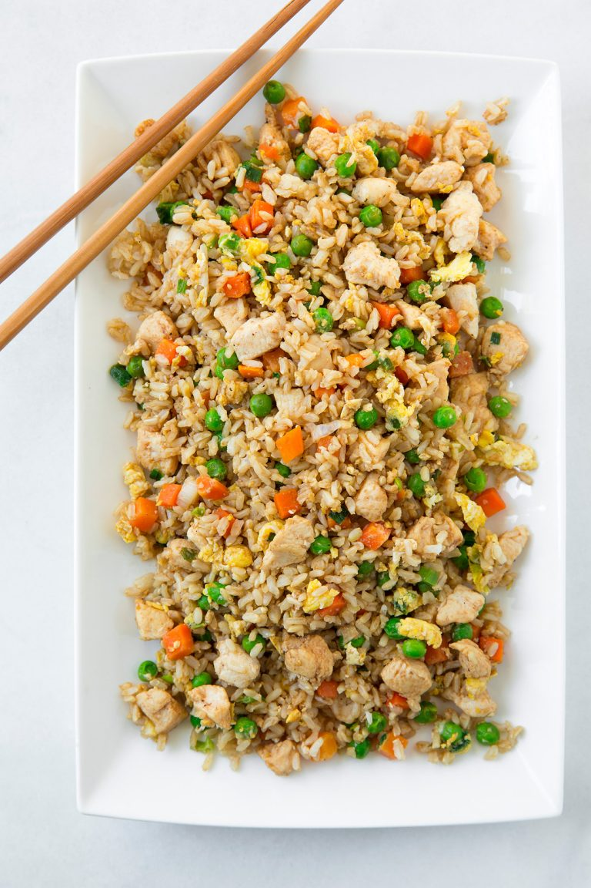

Main menu
Chicken Fried Rice

Chicken Fried Rice is one of the best weeknight dinners around!
It’s a homemade version of my favorite take-out classic.
Ingredients
-
Brown rice –
leftover rice from the day before works best. White rice will work great
here too.
-
Chicken breasts –
I like to dice the chicken into very small pieces about 1/2 – 3/4-inch,
it makes it the perfect size for this fried rice.
-
Toasted sesame oil –
this oil is very strong and a little goes a long way. This ingredient
adds lots of flavor to this dish.
-
Vegetable oil (or canola oil) –
this is used for sautéing (along with the sesame oil so you won’t use to
much of that and sesame oil on it’s own has a low smoke point).
-
Frozen peas and carrots blend –
I like to use the frozen vegetable here to save time, but fresh will
work too you’ll just have to longer so they’ll become tender enough.
-
Green onions –
feel free to add more green onions to taste.
-
Garlic –
only use fresh garlic here for best flavor.
-
Eggs –
you can add 3 eggs here to stretch the recipe a bit. If it’s easier for
you, you can stir in a bowl with a fork first then add to the skillet.
-
Low-sodium soy sauce –
if you have regular sodium soy sauce that will work too, just start with
2 Tbsp and add more if needed.
Steps
-
In a large non-stick wok or skillet, heat 1 1/2 tsp sesame oil and 1 1/2
tsp of the canola oil over medium-high heat.
-
Add chicken pieces, season lightly with salt and pepper and saute until
cooked through, about 5 – 6 minutes.
- Transfer chicken to a plate or a piece of foil and set aside.
-
Return skillet to medium-high heat, add remaining 1 1/2 tsp sesame oil
and 1 1/2 tsp canola oil.
-
Add peas and carrots blend and green onions and saute 1 minute, then add
garlic and saute 1 minute longer.
- Push veggies to edges of pan.
- Add eggs in center and cook and scramble until just set.
- Return chicken to skillet along with rice.
- Add in soy sauce and season with salt and pepper to taste.
-
Toss everything together and serve warm with Sriracha to taste if
desired.
Main menu